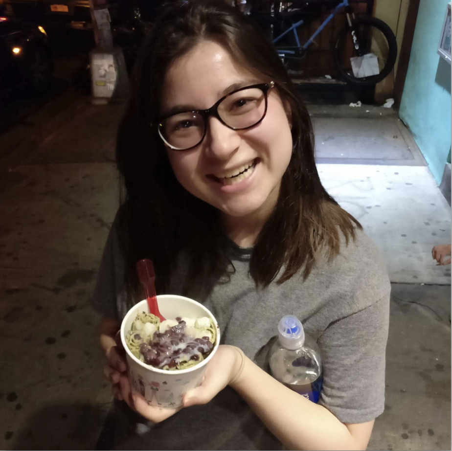

Hi, thanks for stopping by! I’m Jade Schiffer, a current senior at Carnegie Mellon University studying Decision Science, Human-Computer Interaction, and Business Administration. I’m interested in the intersection of business and technology, seeing how new technologies influence the way we understand, work, and play.
My projects focus on interaction design and and user-centered research, understanding how users interact, accomplish, and enjoy products and services. I’m particularly interested in the interactions between people and physical products, seeing how the tangibility of a product influences its experience.
Besides design, technology, and business, I enjoy dance, museums, and trying new foods and desserts (like rolled ice cream)!